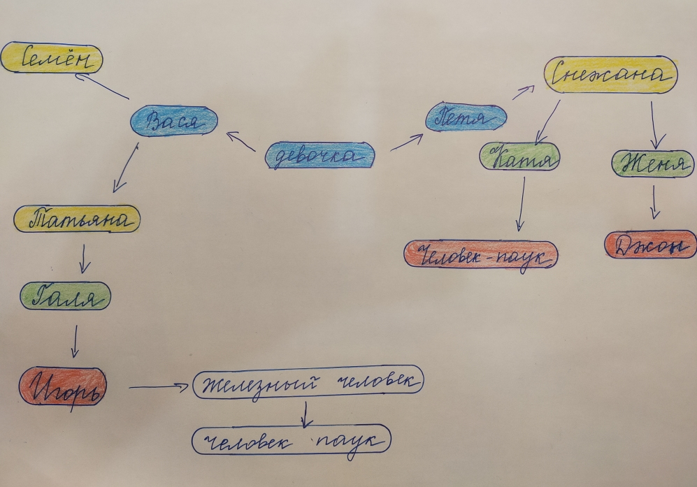

Графы. Поиск в ширину.
Дан словарь (хеш-таблица): a = {"Девочка": ["Вася", "Петя"], "Вася": ["Семён", "Татьяна"], "Петя": ["Снежана"], "Семён": [], "Татьяна": ["Галя"], "Снежана": ["Катя", "Женя"], "Галя": ["Игорь"], "Катя": ["Человек-паук"], "Женя": ["Джон"], "Игорь": ["Железный человек"], "Железный человек": ["Человек-паук"]}.
Допустим, что источник - это "Девочка". Ключ словаря носит имя какого-то человека, а значения ключа - это его знакомые. Нужно найти минимальный путь от "Девочки" к "Человеку-пауку" с помощью графов.
Рисунок:

Код:
from collections import deque
# Ввод данных. Представлен граф с помощью хеш-таблицы (словаря).
a = {
"Девочка": ["Вася", "Петя"],
"Вася": ["Семён", "Татьяна"],
"Петя": ["Снежана"],
"Семён": [],
"Татьяна": ["Галя"],
"Снежана": ["Катя", "Женя"],
"Галя": ["Игорь"],
"Катя": ["Человек-паук"],
"Женя": ["Джон"],
"Игорь": ["Железный человек"],
"Железный человек": ["Человек-паук"]
}
print()
my_search = deque() # <class 'collections.deque'> - класс для создания структуры данных FIFO (First in First out)
full_search = deque() # -||- эта очередь нужна только для добавление в неё людей, чтобы в конце отобразить полную очередь
searched = [] # список проверенных людей
my_search += a["Девочка"] # после этого добавления будет deque(['Вася', 'Петя'])
full_search += a["Девочка"] # -||-
while my_search: # пока очередь остаётся не пустой цикл работает
person = my_search.popleft() # извлекается первый из списка и присваивается для person
if person not in searched: # проверка, проверялись ли эти люди ранее
if person == "Человек-паук":
print(f"{person} найден.")
print()
break
else:
my_search += a[person] # если это не Человек-паук, то все его друзья добавляются в очередь class 'collections.deque'
full_search += a[person]
searched.append(person)
print(f"Очередь к {full_search}\n")
print(f"Оставшаяся очередь {my_search}\n")
print(f"Проверенные люди {searched}\n")